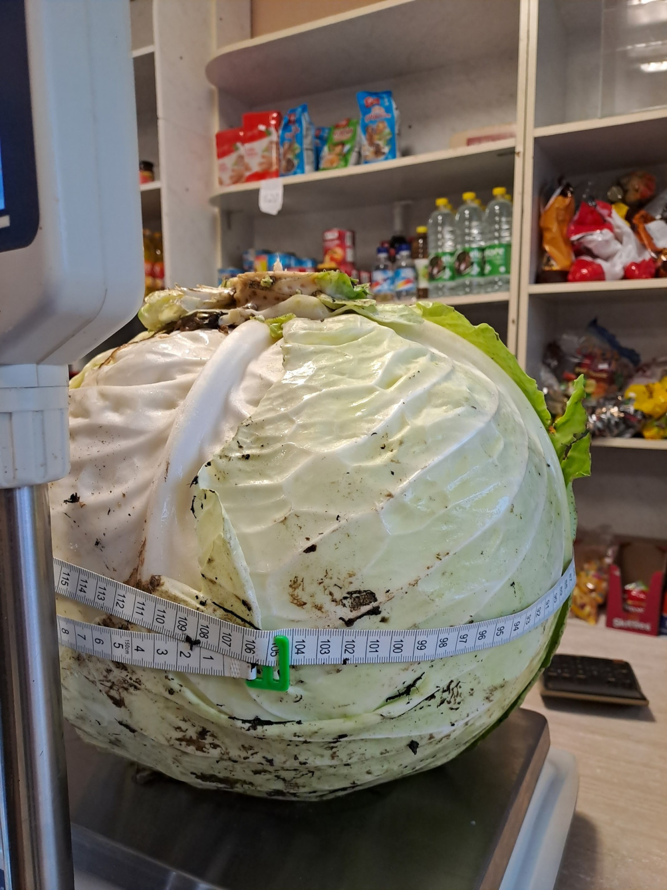

Lietuviška virtuvė – Lietuvoje ir tarp lietuvių paplitusi kulinarinių tradicijų visuma, Lietuvos nacionalinė virtuvė. Nors dėl istorinių ryšių ir įtakų ji turi daug panašumų į kitas aplinkinių tautų virtuves, jai būdingi savitumai leidžia kalbėti apie ją kaip apie atskirą tradiciją. Maistas ir valgymo kultūra Lietuvoje, kaip ir dauguma kitokių visuomenės reiškinių, buvo neabejotinai daugiakultūriai. Pažymėtina, kad maistas ir valgymo kultūra taip pat buvo ir socialinis reiškinys (maitinimosi produktai bei kokybė priklausė nuo turimų pajamų ir padėties visuomenėje). Istoriškai socialiniu pagrindu Lietuvoje galima išskirti valstiečių, bajorų, miestiečių, didikų, valdovo dvaro ir (vėliau) viešojo maitinimo įstaigų virtuves. Valdovo ir didikų (iš dalies ir bajoriškoje) virtuvėse ryškūs europinių – gotikinės, renesansinės, barokinės ir švietimo epochos – virtuvių poveikis. Produktai Lietuvoje nesiskiria nuo kitų Rytų Europos virtuvės produktų. Kaip pagrindinis ląstelienos ir angliavandenių šaltinis vartojamos ruginė duona, košės, nuo XVIII a. – ir bulvės. Baltymų šaltiniai čia yra gyvuliniai: daugiausia mėsa (kiauliena, jautiena, senovėje žvėriena) ir pieno produktai (rūgpienis, varškė, grietinė, sūris). Žuvies tradiciškai vartojama labai nedaug, bet gaminamos kai kurios gėlavandenės žuvys, kaip lydeka. Valstiečių virtuvė negalėjo pasigirti didele daržovių ir vaisių įvairove. Čia paplitęs kopūstas, morka, ropė, burokas, obuolys, kriaušė. Labai svarbią dalį mitybos racione nuo seno užima laukiniai augalai (laukinės uogos, vaisiai, grybai, vaistažolės). Čia paplitę daugiau prieskonių, nei kitose Baltijos šalių virtuvėse: gausiai naudojami kmynai, mairūnai, petražolės, krapai. Nuo seno vienintelis saldiklis buvo medus. Lietuviai maisto produktus kepdavo, virdavo, troškindavo, o mėsą ir žuvis mokėjo ir rūkyti. Lietuvoje gana gausus šaltasis užkandžių stalas, būdingas visoms Baltijos šalių virtuvėms. Jame patiekiami įvairūs sūriai, rūgusio pieno produktai, rūkytos mėsos bei žuvies gaminiai, šaltiena, įvairūs mėsos vyniotiniai.
